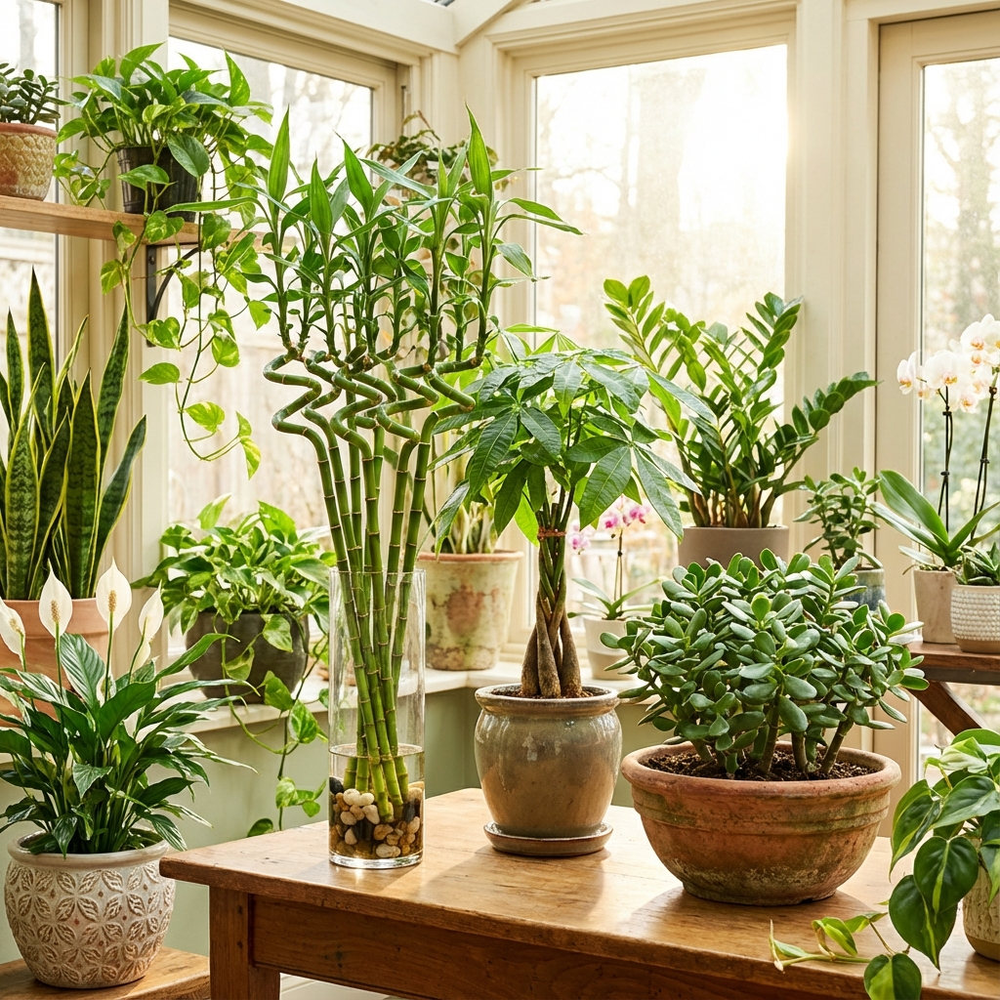

Why Plants Are Essential in Feng Shui
Plants are living energy that bring vitality, growth, and prosperity into your home. In feng shui, they represent the wood element and offer:
- 🌱 Growth and new beginnings
- 💰 Wealth and abundance
- 🏥 Health and vitality
- 😌 Air purification and calm
- ⚡ Activation of stagnant energy
The right plants in the right places can transform your home's energy and attract prosperity!
📖 Table of Contents
Top 15 Feng Shui Plants
1. Money Tree (Pachira Aquatica) 💰
Best For: Wealth, prosperity, business success
Symbolism: The braided trunk represents the five elements, and the five-lobed leaves attract wealth.
Best Location: Wealth corner (far left from entrance), office, living room
Care: Medium light, water when top inch of soil is dry
Why It Works: The upward growth symbolizes rising fortune and success.
2. Lucky Bamboo (Dracaena Sanderiana) 🎋
Best For: Good fortune, flexibility, growth
Symbolism: Number of stalks matters:
- 3 stalks: Happiness, wealth, long life
- 5 stalks: Health
- 6 stalks: Prosperity
- 8 stalks: Wealth and abundance
- 9 stalks: Good fortune
- 21 stalks: Great wealth and health
Best Location: East (health), Southeast (wealth), office desk
Care: Grows in water or soil, indirect light
3. Jade Plant (Crassula Ovata) 🪴
Best For: Wealth accumulation, friendship
Symbolism: Round leaves resemble coins, symbolizing money and prosperity
Best Location: Entrance, office, wealth corner
Care: Bright light, water sparingly (succulent)
Gift Tip: Perfect housewarming gift for new business or home!
4. Snake Plant (Sansevieria) 🗡️
Best For: Protection, air purification, resilience
Symbolism: Upright leaves act as protective swords against negative energy
Best Location: Office, bedroom (purifies air at night), corners
Care: Very low maintenance, tolerates low light, infrequent watering
Air Quality: NASA study shows it removes toxins and produces oxygen at night!
5. Pothos (Epipremnum Aureum) 🍃
Best For: Abundance, air purification, easy care
Symbolism: Trailing vines represent flowing abundance and opportunities
Best Location: High shelves, hanging baskets, bathrooms
Care: Very easy, low to bright indirect light, water when dry
Bonus: Grows quickly and can be propagated easily!
6. Peace Lily (Spathiphyllum) ☮️
Best For: Harmony, tranquility, air purification
Symbolism: White flowers represent purity and peace
Best Location: Bedroom, living room, office
Care: Low to medium light, keep soil moist
Air Quality: Excellent at removing mold spores and toxins
7. Rubber Plant (Ficus Elastica) 🌳
Best For: Wealth, abundance, grounding
Symbolism: Round leaves attract wealth, sturdy trunk provides stability
Best Location: Living room, office, wealth corner
Care: Bright indirect light, water when top soil is dry
Size: Can grow quite large, making a statement piece!
8. Orchid (Orchidaceae) 🌸
Best For: Love, fertility, refinement
Symbolism: Elegant flowers represent perfection and beauty
Best Location: Bedroom (Southwest corner for relationships), living room
Care: Bright indirect light, water weekly, good drainage
Color Meanings:
- Pink: Romance, love
- White: Purity, elegance
- Purple: Wealth, royalty
- Yellow: Friendship, joy
9. Boston Fern (Nephrolepis Exaltata) 🌿
Best For: Air purification, humidity, softening energy
Symbolism: Lush fronds represent abundance and growth
Best Location: Bathroom, kitchen, hanging baskets
Care: High humidity, indirect light, keep soil moist
Benefit: Natural humidifier, great for dry climates!
10. Areca Palm (Dypsis Lutescens) 🌴
Best For: Positive energy, air purification, tropical vibes
Symbolism: Upward growth represents rising energy and success
Best Location: Living room, office, bright corners
Care: Bright indirect light, water regularly, mist leaves
Size: Can grow 6-7 feet indoors, creates a focal point!
11. Chrysanthemum 🌼
Best For: Happiness, longevity, balance
Symbolism: In Chinese culture, represents a life of ease and balance
Best Location: Living room, dining room
Care: Bright light, keep soil moist, deadhead spent flowers
Air Quality: NASA approved for air purification!
12. Aloe Vera 🌵
Best For: Health, protection, healing
Symbolism: Healing properties represent health and vitality
Best Location: Kitchen (for burns), bathroom, bedroom
Care: Bright light, water sparingly (succulent)
Practical Use: Gel soothes burns and skin irritations!
13. Philodendron 🍀
Best For: Abundance, fire element balance
Symbolism: Heart-shaped leaves represent love and compassion
Best Location: Living room, office, high shelves
Care: Low to bright indirect light, water when top inch is dry
Variety: Many types available, all easy to care for!
14. Spider Plant (Chlorophytum Comosum) 🕷️
Best For: Air purification, positive energy, easy care
Symbolism: Baby plants (spiderettes) represent fertility and new beginnings
Best Location: Hanging baskets, shelves, any room
Care: Very easy, tolerates various conditions
Propagation: Baby plants can be easily rooted for more plants!
15. Citrus Trees (Lemon, Orange) 🍊
Best For: Abundance, good fortune, vitality
Symbolism: Fruit represents wealth and prosperity, especially during Chinese New Year
Best Location: Living room, near South-facing window
Care: Bright light (6-8 hours), water regularly, fertilize
Bonus: Fresh citrus scent and edible fruit!
Best Plants by Room
Living Room 🛋️
- Money Tree (wealth corner)
- Rubber Plant (statement piece)
- Areca Palm (bright corners)
- Orchid (elegance)
Bedroom 🛏️
- Snake Plant (air purification at night)
- Peace Lily (tranquility)
- Orchid (romance - Southwest corner)
- Aloe Vera (healing)
Note: Avoid too many plants in bedroom (can be too yang/active)
Office/Study 💼
- Lucky Bamboo (desk)
- Jade Plant (wealth)
- Snake Plant (focus)
- Pothos (abundance)
Kitchen 🍳
- Aloe Vera (practical for burns)
- Pothos (easy care)
- Herbs (basil, mint - fresh and useful)
Bathroom 🚿
- Boston Fern (loves humidity)
- Pothos (tolerates low light)
- Snake Plant (low maintenance)
- Peace Lily (purifies air)
Entrance/Hallway 🚪
- Jade Plant (welcomes wealth)
- Lucky Bamboo (good fortune)
- Small palms (positive energy)
Feng Shui Plant Placement Rules
DO ✅
- Place in corners: Soften sharp angles and activate stagnant energy
- Wealth corner: Far left from entrance (money tree, jade plant)
- Empty spaces: Fill voids with living energy
- Near windows: Natural light helps plants thrive
- Pairs: Two plants create balance and harmony
- Healthy plants only: Vibrant, thriving plants = positive energy
DON'T ❌
- Block walkways: Disrupts chi flow
- Dead/dying plants: Remove immediately (negative energy)
- Too many in bedroom: Can be overstimulating
- Directly above bed: Can create oppressive energy
- Blocking doors: Prevents opportunities from entering
- In bathroom center: Water drains wealth energy
Pot Selection
- Material: Ceramic, terracotta (natural materials)
- Color: Match to room's feng shui element
- Drainage: Essential for plant health
- Size: Proportional to plant and space
Plant Care Tips for Positive Energy
Keep Plants Healthy
Healthy plants = positive energy. Sick plants = negative energy.
- 💧 Water appropriately (not too much or too little)
- ☀️ Provide adequate light
- 🌱 Fertilize during growing season
- ✂️ Prune dead leaves immediately
- 🧹 Dust leaves regularly (allows energy flow)
- 🔄 Rotate pots for even growth
When a Plant Dies
Don't panic! Sometimes plants absorb negative energy and sacrifice themselves.
- Thank the plant for its service
- Remove immediately
- Cleanse the pot before reusing
- Replace with a fresh, healthy plant
Talking to Your Plants
Plants respond to positive energy!
- Speak kindly to your plants
- Express gratitude
- Play soft music
- Set positive intentions
Plants to Avoid in Feng Shui
Cacti and Succulents (With Caution) 🌵
Why: Sharp spines create "poison arrows" (sha chi)
Exception: Aloe vera is acceptable due to healing properties
If you must: Place outdoors or in windows facing outward (protection)
Plants with Pointed Leaves
Why: Can create aggressive energy
Examples: Yucca, some dracaenas
Better choice: Round-leafed plants (jade, rubber plant)
Dried or Artificial Plants
Why: No living energy, can attract dust
Exception: High-quality silk plants if you cannot maintain real ones
Better: Always choose living plants when possible
Bonsai Trees (Controversial)
Why: Stunted growth may limit opportunities
Counterpoint: Some practitioners see them as representing controlled growth
Decision: Use your intuition
Conclusion: Your Plant Checklist
- ✅ Choose plants based on your goals (wealth, health, harmony)
- ✅ Place in appropriate rooms and corners
- ✅ Keep plants healthy and vibrant
- ✅ Remove dead or dying plants immediately
- ✅ Use natural pots with good drainage
- ✅ Dust leaves regularly
- ✅ Avoid cacti indoors (except aloe)
- ✅ Prefer round leaves over pointed
- ✅ Speak kindly to your plants
- ✅ Start with easy-care plants if you're a beginner
Beginner's Starter Kit
If you're new to plants, start with these 3 easy-care options:
- Pothos: Nearly indestructible, grows anywhere
- Snake Plant: Tolerates neglect, purifies air
- Lucky Bamboo: Grows in water, minimal care
🎁 Want More Feng Shui Tips?
Download my FREE Feng Shui Guide with plant placement diagrams!
Get Your Free Guide